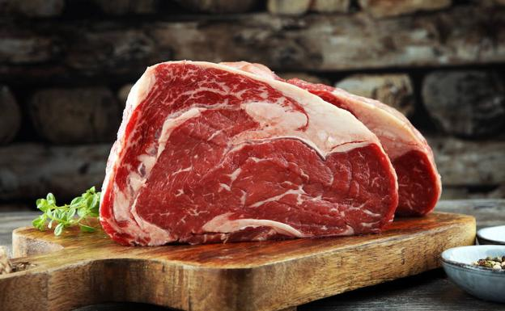
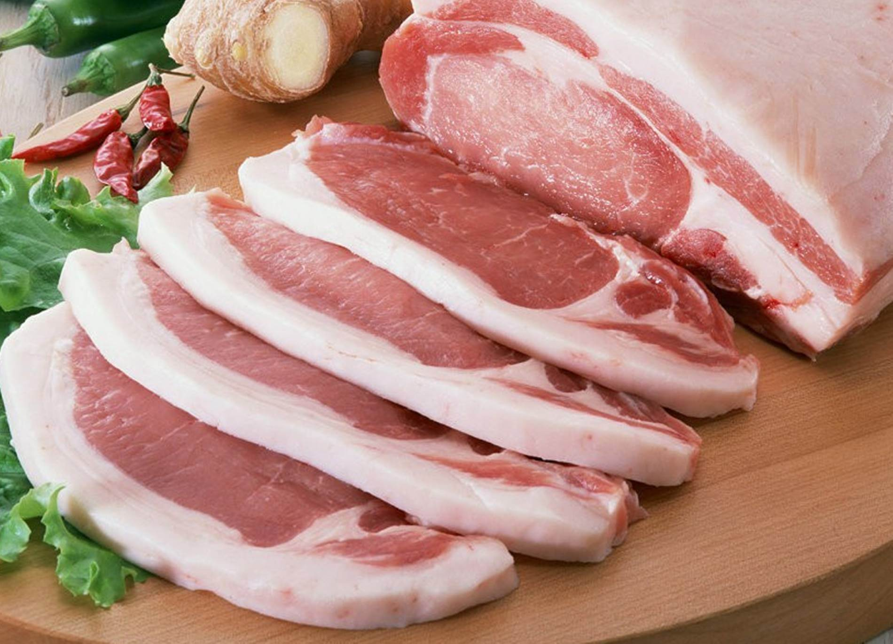

Carne Roja
Estas deben su color rojizo cuando están crudas al pigmento llamado mioglobina y siempre y en toda circunstancia proceden de mamíferos.
En este conjunto se encuentran:
- Carne de vaca: esta se identifica por su elevado contenido de grasa es precisamente por esto que aquellas personas que tengan diabetes,
hipertensión, sobre peso o bien obesidad deben eludir un consumo excesivo de esta variación. Si la carne pertenece a un animal de edad
avanzada va a tener mayor grasa, proteínas y su sabor va a ser más fuerte. En cambio, en aquellos animales menores a un año, va a ser
más tierna en tanto que solo se nutren de leche. El consumo de la carne de vaca es ventajoso en tanto que ayuda a la reposición de
células y a tener un sano desarrollo. Se identifica por ser rica en vitaminas B, minerales y proteínas.

- Carne de cerdo: se identifica por contar con un elevado contenido de aminoácidos, con lo que forma una esencial fuente de proteínas.
Del mismo modo que en el resto de las carnes, el porcentaje de hidratos de carbono que tiene es bajísimo, 1 por ciento que está representado por glicolípidos.
En igual porcentaje se presentan los minerales. En la carne de cerdo las vitaminas que más presentes están son las del complejo B, sobre todo B6, B12 y B1.
Esta última se halla en mayor proporción que en las otras carnes.

- Carne de caballo: se identifica por contar con una baja presencia de grasa, es rica en vitaminas hidrosolubles, sobre todo del complejo B.
La carne equina se identifica por ser más tierna que el resto y esto se marcha aumentado conforme avejenta el animal. Además de esto tiene un sabor dulce
y un elevado contenido proteico.
- Carne ovina: se identifica por su elevada concentración de grasa en ciertos cortes, en comparación a otros animales. Presenta un elevado aporte de
vitaminas B12 y B2 y asimismo de B1 y B3, si bien en menor medida. En contraste a otras carnes, es considerada una fuente de minerales, sobre todo de hierro
hemo, que ayuda a la capacitación de hemoglobina, previniendo la anemia ferropénica. Aparte de hierro, la carne ovina aporta cinc, fósforo y sodio.
Volver a Inicio